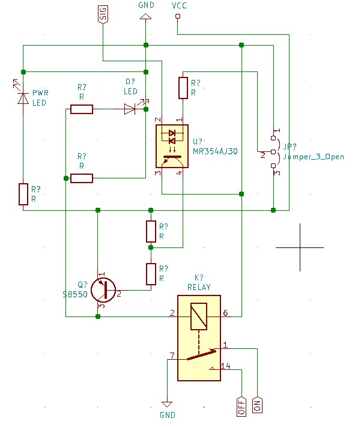
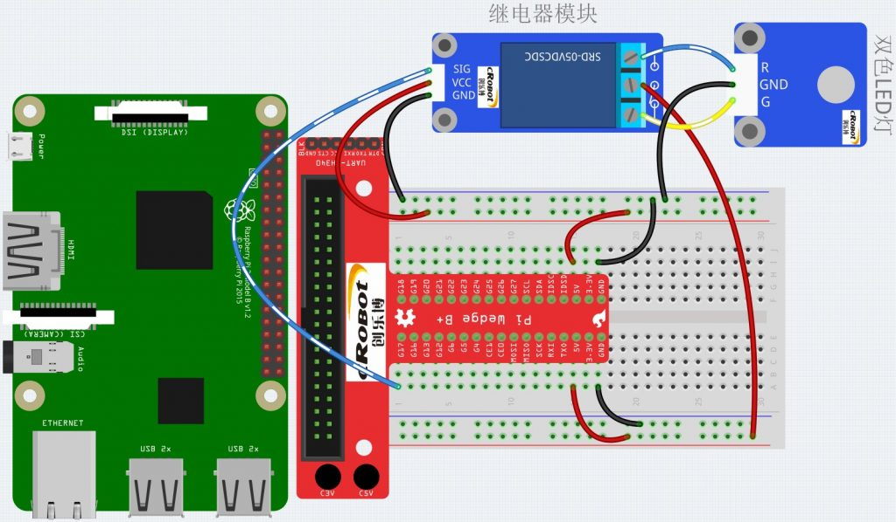
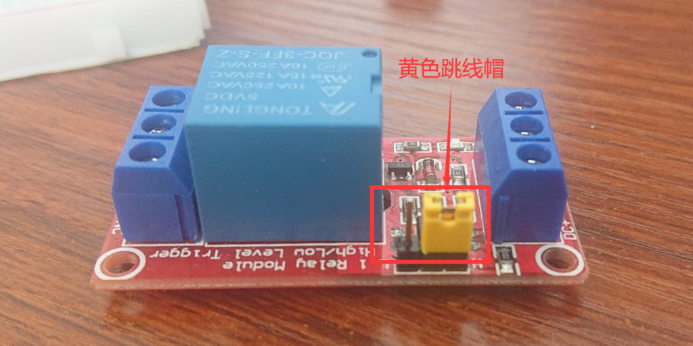

Relay module 继电器模块代码及模块电路 树莓派3
Relay module 继电器模块，使用小的信号控制大电流或大电压。继电器工作在控制器（开关）和设备之间，比如AC控制DC。文章内容包括继电器模块原理图，模块接线图，相关代码。
模块原理图是我自己根据继电器模块画出来的,可能会有错误,如果发现请帮我指出,内容只能作为互相学习和参考使用.

模块接线图：sig为控制信号，不同的电平切换实现LED灯的变色。

代码及注释：代码还是一样的流程,指定引脚,初始化wiringpi库,指定引脚模式为输出,循环写高低电平.
1 |
|
继电器模块有一个跳线,可以实现高电平触发或低电平触发两种方式,实现控制用电设备(双色灯).

电路原理图链接（OneDrive）：
树莓派3更多模块请点击链接：